I2C 协议详解
电子行业最常用的 3 种串行通讯协议：UART、SPI 和 I2C。前面介绍了 串口通讯协议 及其 FPGA 实现 ， SPI 协议 。本篇文章介绍 I2C 通讯协议及其 FPGA 实测波形。文末有【官方标准文档下载方法】。
有哪些内容
- I2C 是什么
- 5 种速率
- 4 种信号
- 读写时序
- 7 位和 10 位地址
- I2C 保留字节
- FPGA 实测 I2C 波形
- SPI 和 I2C 的对比
I2C 是什么
在消费电子，工业电子等领域，会使用各种类型的芯片，如微控制器，电源管理，显示驱动，传感器，存储器，转换器等，他们有着不同的功能，有时需要快速的进行数据的交互，为了使用最简单的方式使这些芯片互联互通，于是 I2C 诞生了，I2C(Inter－Integrated Circuit) 是一种通用的总线协议。它是由 Philips (飞利浦) 公司，现 NXP (恩智浦) 半导体开发的一种 简单的双向两线制 总线协议标准。
对于硬件设计人员来说，只需要 2 个管脚，极少的连接线和面积，就可以实现芯片间的通讯，对于软件开发者来说，可以使用同一个 I2C 驱动库，来实现实现不同器件的驱动，大大减少了软件的开发时间。极低的工作电流，降低了系统的功耗，完善的 应答机制 大大增强通讯的可靠性。
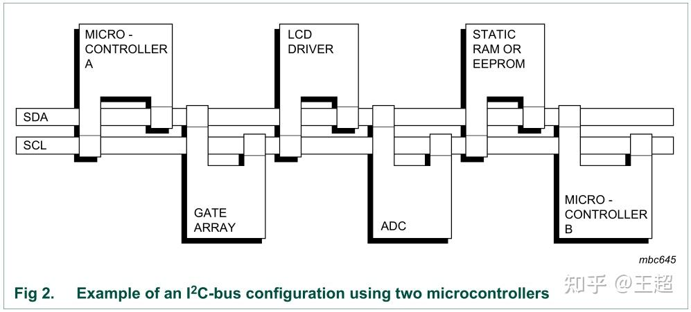
5 种速率
I2C 协议可以工作在以下 5 种速率模式下，不同的器件可能支持不同的速率。
- 标准模式 (Standard)：100kbps
- 快速模式 (Fast)：400kbps
- 快速模式+(Fast-Plus)：1Mbps
- 高速模式 (High-speed)：3.4Mbps
- 超快模式 (Ultra-Fast)：5Mbps（单向传输）
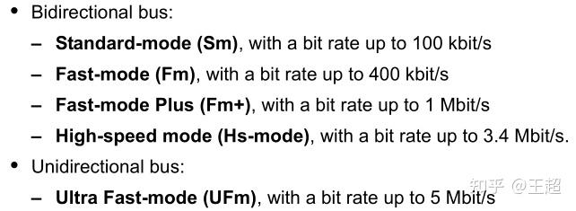
【bps：bit/s，即 SCL 的频率】
其中超快模式是单向数据传输，通常用于 LED、LCD 等不需要应答的器件，和正常的 I2C 操作时序类似，但是只进行写数据，不需要考虑 ACK 应答信号。
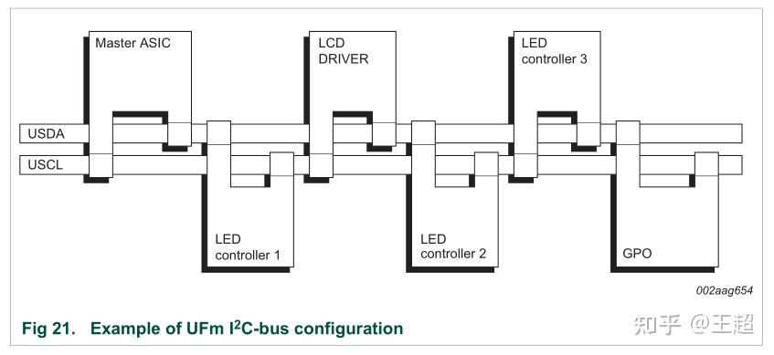
在 I2C 协议的官方文档 NXP_ UM10204 _I2C-bus specification and user manual_Rev.6 ，超快模式和其他模式在 3.2 和 3.1 章节分别进行介绍。
4 种信号
I2C 协议最基础的几种信号： 起始、停止、应答和非应答信号 。
起始信号
I2C 协议规定，SCL 处于高电平时，SDA 由高到低变化，这种信号是起始信号。
停止信号
I2C 协议规定，SCL 处于高电平，SDA 由低到高变化，这种信号是停止信号。
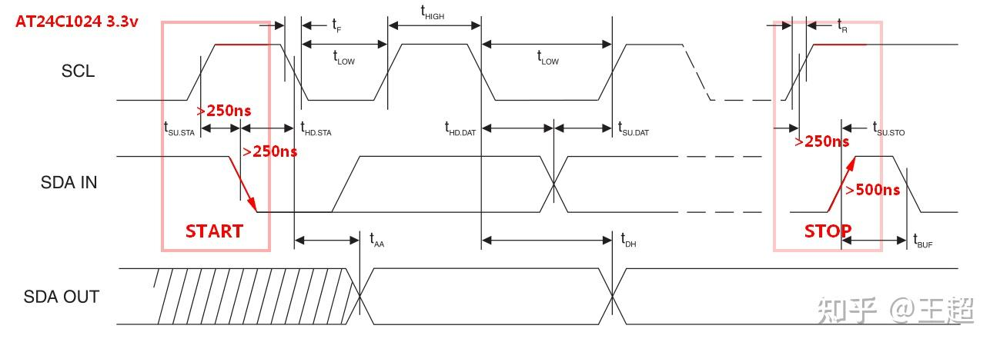
数据有效性
I2C 协议对数据的采样发生在 SCL 高电平期间，除了起始和停止信号，在数据传输期间，SCL 为高电平时，SDA 必须 保持稳定 ，不允许改变，在 SCL 低电平时才可以进行变化。
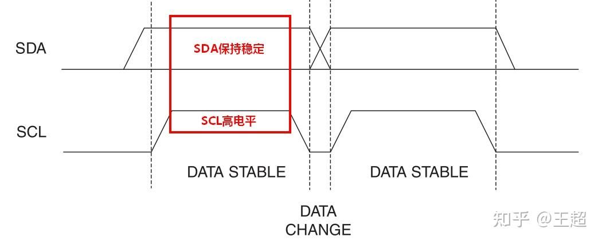
应答信号
I2C 最大的一个特点就是有完善的应答机制，从机接收到主机的数据时，会回复一个应答信号来通知主机表示“ 我收到了 ”。
应答信号出现在 1 个字节传输完成之后，即第 9 个 SCL 时钟周期内，此时主机需要释放 SDA 总线，把总线控制权交给从机，由于上拉电阻的作用，此时总线为高电平，如果从机正确的收到了主机发来的数据，会把 SDA 拉低，表示应答响应。
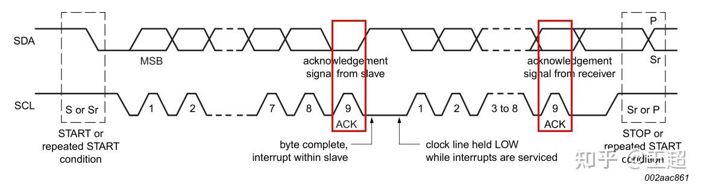
使用 MCU、FPGA 等控制器实现时，需要在第 9 个 SCL 时钟周期把 SDA 设置为高阻输入状态，如果读取到 SDA 为低电平，则表示数据被成功接收到，可以进行下一步操作。
非应答信号
当第 9 个 SCL 时钟周期时，SDA 保持高电平，表示非应答信号。
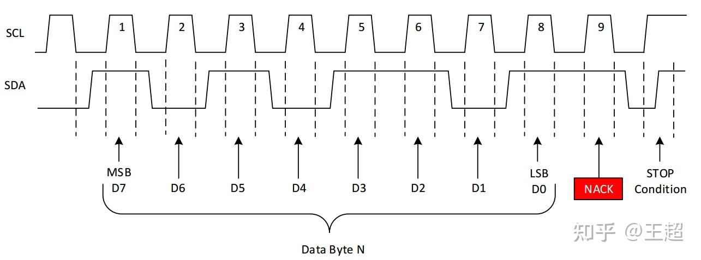
非应答信号可能是主机产生也可能是从机产生，产生非应答信号的情况主要有以下几种：
- I2C 总线上没有主机所指定地址的从机设备
- 从机正在执行一些操作，处于忙状态，还没有准备好与主机通讯
- 主机发送的一些控制命令，从机不支持
- 主机接收从机数据时，主机产生非应答信号，通知从机数据传输结束，不要再发数据了
读写时序
向指定寄存器地址写入指定数据操作时序：
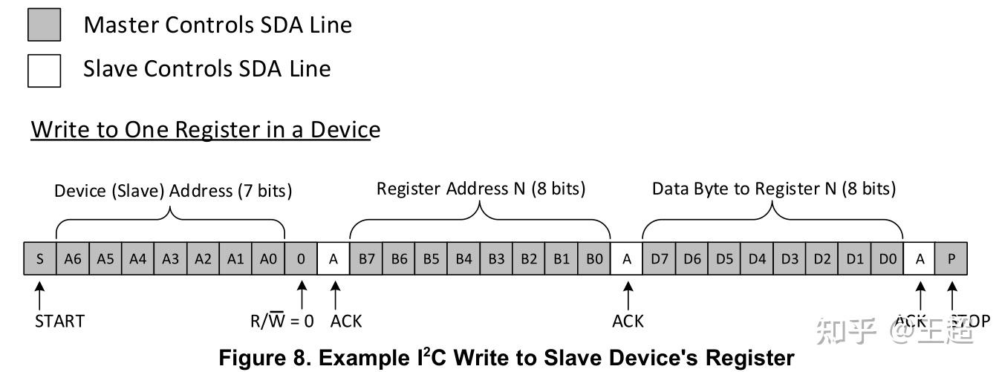
从指定寄存器地址读取数据操作时序：
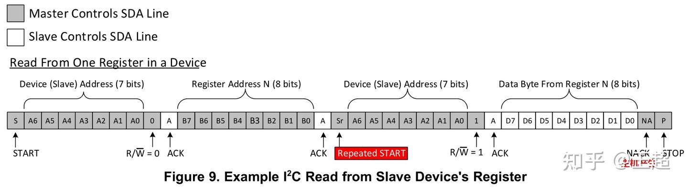
注意，读数据时有两次起始信号。
7 位和 10 位地址
大多数 I2C 器件支持 7 位地址 模式，有一些器件还支持 10 位地址 ，而且两种类型的器件可以连接在同一个 I2C 总线上，目前 10 位地址的器件 还没有被广泛使用 。
主机发送，从机接收。使用 10 位地址进行写时序：
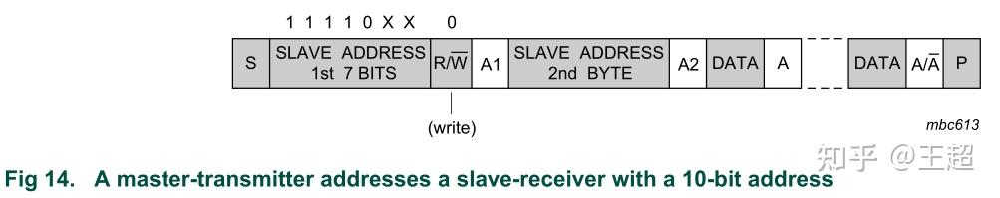
主机接收，从机发送。使用 10 位地址进行读时序：
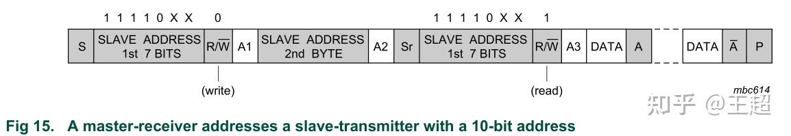
I2C 保留字节
I2C 读写时起始位之后的第一个字节，除了厂商指定的设备地址外，还有一些保留字节，主要有两组 0000 xxx 和 1111 xxx，保留字节的含义：
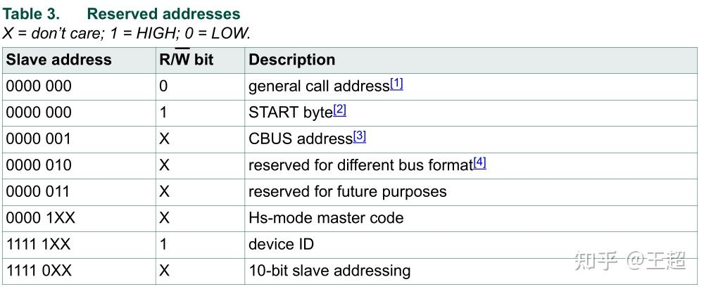
上述的 10 位地址模式，就是使用到了最后一种 保留字节 。
第一种广播模式，可以通过写入第二个字节 06h 来 复位 I2C 总线上所有的从机器件 。具体操作时序可以查看文档 NXP_UM10204_I2C-bus specification and user manual_Rev.6:3.1.12 Reserved addresses 章节有详细介绍。其中 device ID 控制字（1111 1xx1），可以读取 I2C 器件内部的 24 位器件 ID ，通过对照 NXP I2C 协议器件列表可以查询到器件所属的 厂商和型号 。
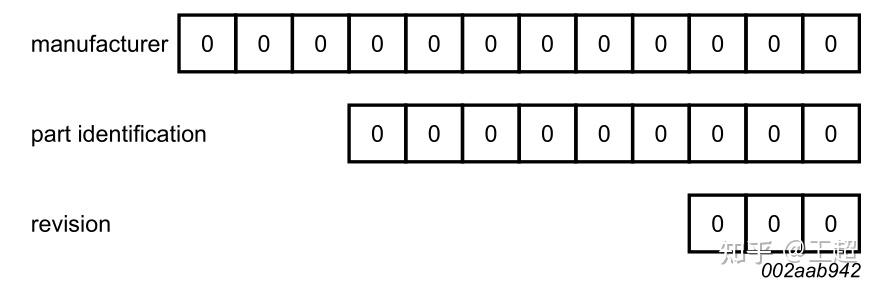
设备 ID 与器件厂商对应表
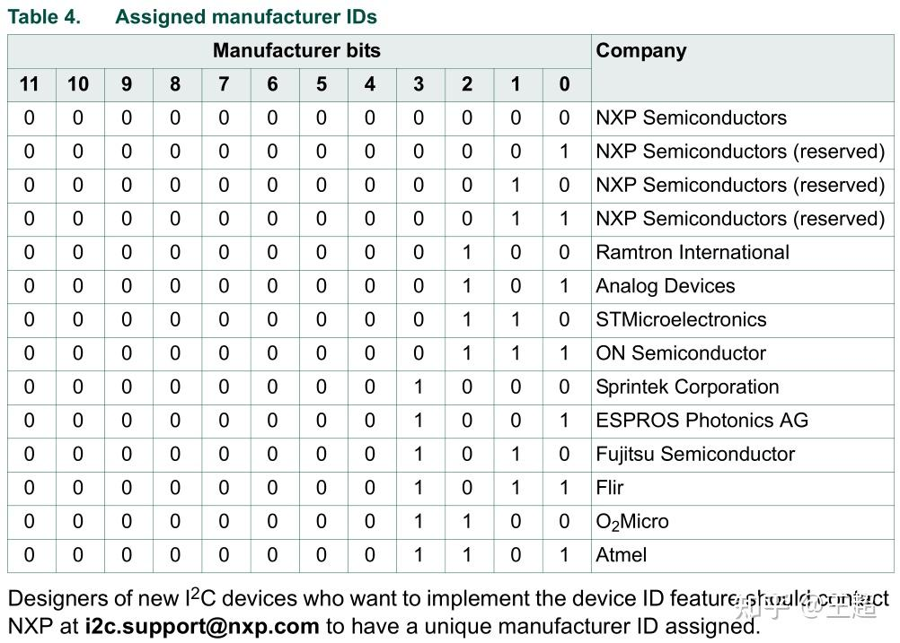
FPGA 实测 I2C 波形
FPGA 实现 UART 、 SPI 、I2C 等串行时序，最常用的实现方式就是 状态机大法 ，将各个步骤分解为各个状态，然后根据不同的状态去控制输出或读取输入，细节方面需要考虑数据的对齐、建立和保持时间、一些异常情况时状态的跳转，不能进入死循环，或卡死在某一个状态。
I2C 控制状态机状态定义：
//general
S0_IDLE = 0,
S1_START1 = 1,
S2_CTRL_BYTE1 = 2,
S3_ACK1 = 3,
S4_ADDR = 4,
S5_ACK2 = 5,
//write: 0-1-2-3-4-5->6-7-13-14
S6W_DATA = 6,
S7W_ACK3 = 7,
//read: 0-1-2-3-4-5->8-9-10-11-12-13-14
S8R_START2 = 8,
S9R_CTRL_BYTE2 = 9,
S10R_ACK3 = 10,
S11R_DATA = 11,
S12R_NACK = 12,
//general
S13_STOP = 13,
S14_DONE = 14,
S15_ERR = 15;注意 SDA 双向端口 的方向控制。
output eeprom_scl,
inout eeprom_sda,
localparam DIR_IN = 1'b0;
localparam DIR_OUT = !DIR_IN;
reg dir;
reg i2c_sda;
reg i2c_scl;
assign eeprom_scl = i2c_scl;
assign eeprom_sda = (dir == DIR_OUT) ? i2c_sda : 1'bz;
wire sda_in = eeprom_sda;SDA 应该在第 9 个 SCL 时钟周期设置为输入状态：
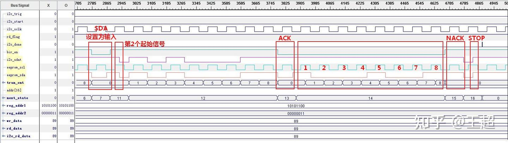
下图的波形是使用 Xilinx FPGA 对 AT24C1024 的驱动，使用片上逻辑分析仪 ChipScope 抓取的实际波形，AT24C1024B 存储空间为 1024K Bit = 131072 Byte，存储单元地址位宽为 17 位。
AT24C1024B 写时序：
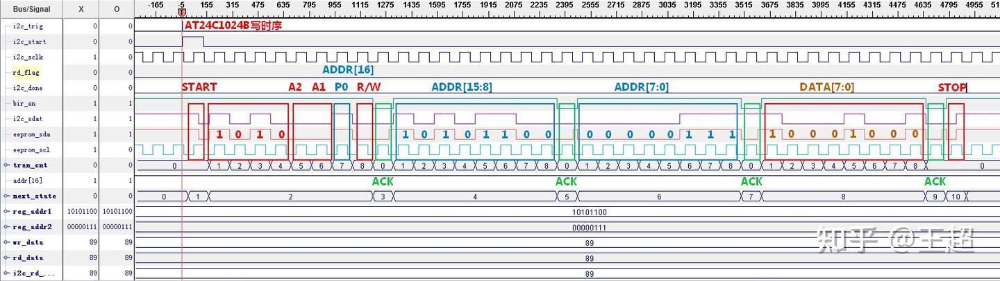
AT24C1024B 读时序：
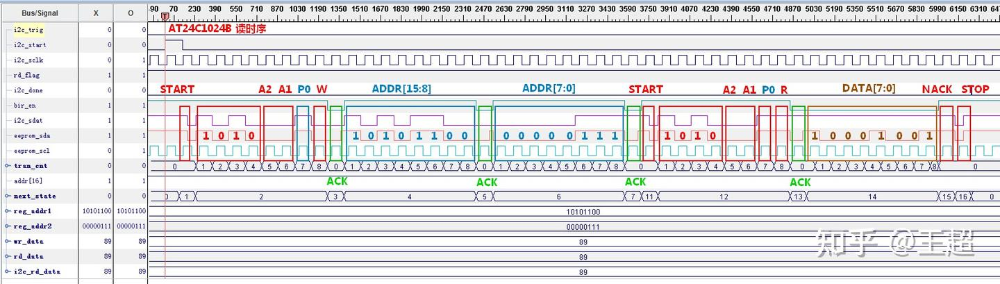
SPI 和 I2C 的对比
- I2C 是半双工，SPI 是全双工。
- I2C 支持多主多从模式，而 SPI 只能有一个主机。
- 从 GPIO 占用上来看，I2C 占用更少的 GPIO，更节省资源。
- I2C 有应答响应机制，数据可靠性更高，SPI 没有应答机制。
- I2C 速率不会太高，最高速率 3.4Mbps，SPI 可以达到很高的速率。
- I2C 通过器件地址来选择从机，从机数量的增加不会导致 GPIO 的增加，而 SPI 通过 CS 选择从机，每增加一个从机就要多占用一个 GPIO。
- SPI 协议在 SCLK 边沿进行数据采样，I2C 在 SCL 高电平器件进行数据采样。
- 两者大多都应用于板内器件短距离通讯。
官方标准文档下载
目前网上比较详细的介绍 I2C 文档主要有以下 3 个：
1. I2C 官方标准文档_UM10204
I2C 的官方文档是原飞利浦 (Philips) 半导体事业部，现恩智浦 (NXP) 半导体发布的 UM10204 文档，全文共 64 页，是目前最权威最详细的 I2C 协议介绍文章，最新版本 Rev. 6 发布于 20140404， UM10204_4 April 2014: I2C-bus specification and user manual_Rev.6
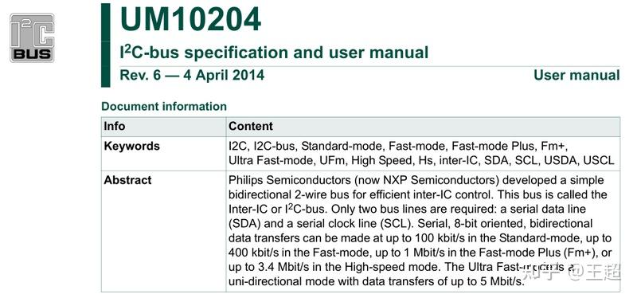
2. TI：理解 I2C 文档_SLVA704
TI 在 2015 年发布了一篇 SLVA704 文档，全文共 8 页，精简的概括了 I2C 协议的电气特性，操作时序，读写时序等，比较适合 I2C 入门学习。
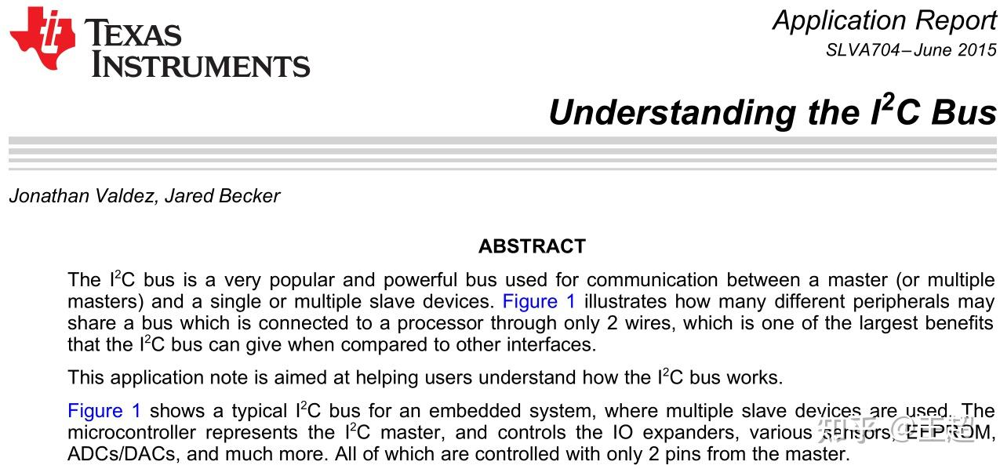
3. ZLG：I2C 总线规范中文版
这篇文档发布于 2000 年左右，是对飞利浦官方文档 UM10204_v2.1 的翻译。
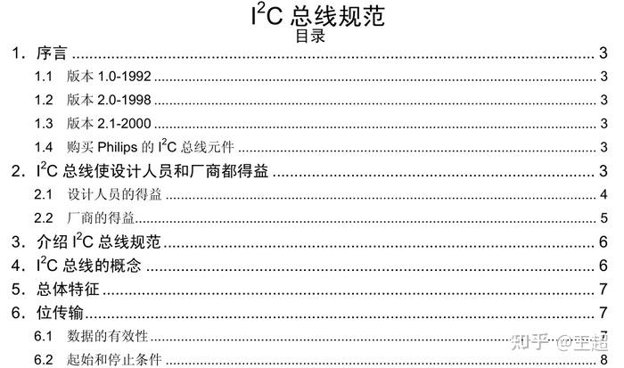
I2C 协议文档只是最基础的文档，具体寄存器读写操作等操作，还是要结合所使用芯片的数据手册来使用。
获取以上 3 个文档，可以在公众号（ID：电子电路开发学习）后台回复【I2C 文档】，获取下载链接。